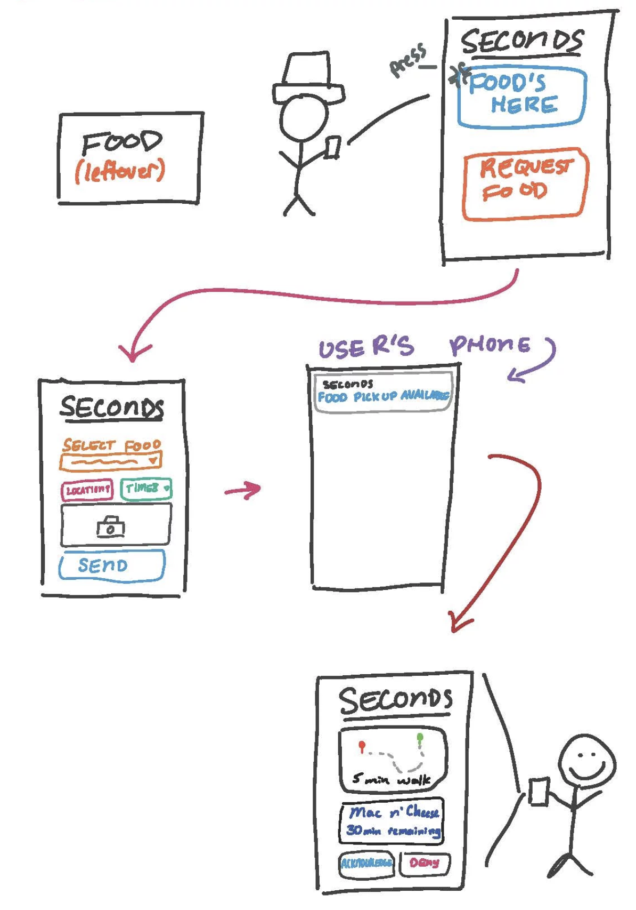

Data Science & Statistics
All projects were done as part of an advanced statistics course at the University of Maryland. All projects were done using R and pre-existing data sets from the 2016 General Social Survey (GSS).
Political Stance and Environmental Spending
Hypothesis: Individuals that identify as liberal will think we are not spending enough money on protecting and improving the environment.
Method: Sampled data from the nationally representative 2016 General Social Survey (GSS). Chi-square analysis was used.
Results: Our results indicated that if you are liberal, you are more likely to believe we are not spending enough money on protecting and improving the environment. X2(4, 1350) = 106.9, p<0.05
See the full report.
Gender and Income in the United States
Hypothesis: Men have higher annual income, on average, than women.
Method: Sampled data from the nationally representative 2016 GSS. Independent Samples T-test.
Results: Our results showed males do have a higher income on average than females, and it is statistically and substantively significant
See the full report.
Yearly Income and Hours worked/week
Hypothesis: Those who work more hours per week will have higher annual income on average.
Method: Sampled data from the nationally representative 2016 GSS. A Simple OLS Regression of Income on Hours worked, with an alpha level of 0.10.
Results: At the 0.01 significance level, we can generalize our findings to the target population of working class adults in the U.S. For every extra hour you work per week, you can expect an average increase of 854.2 dollars (p<0.01).
See the full report.
Effect of Hrs/week, gender, number of children, and class on Income
Hypothesis: The combined factors of Hours Worked per Week, Number of Children, Gender, and Number of Children will affect a person’s annual income.
Method: Sampled data from the nationally representative 2016 GSS. A Multiple OLS Regression of income on hours worked last week, number of children, gender, and class at an alpha level of 0.01.
Results: Every independent variable, except number of children, was significant at the 0.01 alpha level.
See the full report.
Gun Violence in The United States
Work with a team to design and create a relational SQL database that tracks and stores data on mass shootings in the United States. Data was supplied from the Gun Violence Archive and the Database was created using MySQL.
Motivation and Rationale
Gun violence is extremely prevalent within American schools, places of worship, movie theaters, and general public spaces. As access to guns are relatively easy in the United States, we wanted to bring awareness to the devastation it causes, as well as provide unbiased data so that people can truly learn about the issues.
Logical Design
We created our Logical Design by creating a core table and then the surrounding tables. We then identified Primary and Foreign Keys
Answering Interesting Questions
We created many SQL queries and created Views to answer intersting and pertinant questions that people might have. These included:
Food Safety PG
As part of an upper level Information Science course, myself and a team of 5 other students created a Dynamic Web Application using HTML, CSS, JS, and libraries inclduing Express, Bootstrap, Leaflet, and the Google Maps API. The site was built around using the Prince George's County Open Data Project. Our site was called Food Safety PG. You can read more about the project, see the code, and read our documentation on our Github page.
Food Safety PG, or FSPG for short, is an application that was created in order to guide the general public, and even other groups such as health care administrators and restaurant owners, on the safety and compliance status of food establishments in PG County. Hundreds of millions of people are being contaminated by restaurants that are not properly preparing food, causing illnesses and sometimes death, all because there is no clear way for people to know which places are safe to eat in. FSPG is here to change that. FSPG is an interactive application that allows users to explore the different food establishments around the area and learn more about their cleanliness rating and how well they did in previous inspections. Because of its transparent and unbiased presentation of the data, users will be able to make more well-informed decisions on where to eat, making sure their health is their number one priority.
How it works
You’re hungry and you want to eat… what do you do.
- The first step in using the FSPG application is applying the filters that relate to your specific search. This can be done by checking the relevant boxes on the left hand side under the Filters section, and clicking “Filter”.
- You’ll notice that the map has updated with markers of the locations of food establishments that meet the criteria of the filters that you selected. Click on the marker you want to learn more about and then click “Get Results” to learn more about the food establishment.
- Underneath, you’ll see that the name, location, & inspection results in the 'Results' section of the page have updated with the information related to the food establishment that you have selected.


Seconds
A food recovery project by 5 University of Maryland Students. The project was focused around a discipline called User Centered Design (UCD) or also, Human Cented Design. We sought out to tackle the ongoing problem of food waste on the University of Maryland campus.
Problem Statement
The University of Maryland needs to redistribute food ‘waste’ to the community in a way that is sustainable. This project will support the University of Maryland school system initiative to underserved individuals in the College Park area. As a student body, we have the capability to not only reduce our environmental footprint, but also serve the outside community. In order to fulfill our goals, we must create a means of communication between the community outside and within the University of Maryland.
The Process
The project took place over the course of one semester and involved the steps of the iterative design cycle.
- Contextual analysis
- Designing and prototyping
- Testing
- Evaluation
As a team, we conducted interviews with potential users, observed the current state of food waste on campus, created user personas, wireframes, and a prototype application.
User Persona
- College student
- 17-26 years old
- Part time worker
- On a budget
- Tach savvy
Product Design
Demo